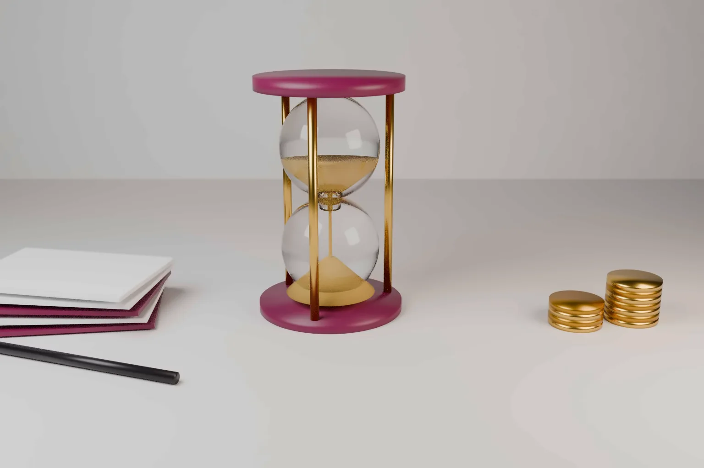

How long does intellectual property protection last? A patent usually lasts 20 years from filing. Trade marks last as long as you keep renewing them. Copyright runs for the author's life plus 60 years in India and plus 70 years in the US and the EU. Designs fall in between.
The details decide real value. When does the clock start? What keeps the right alive? Can the term be extended? This guide answers those questions for India, the United States and Europe, with notes on the UK and China where the rules differ.
- Patents last 20 years from the filing date in India, the US, at the EPO and in China. Renewal or maintenance fees must be paid to keep them in force.
- India has no patent term adjustment for office delay. The US and China do. The Supreme Court of India is now examining the question.
- Trade marks are registered for 10 years at a time in India, the US and the EU. They can be renewed without limit.
- Registered designs last up to 15 years in India and the US, and up to 25 years in the EU and the UK.
- Copyright lasts for the author's life plus 60 years in India, and life plus 70 years in the US and the EU.
Patents: 20 years from filing, if you pay to keep them
India
Section 53 of the Patents Act, 1970 sets the term at 20 years from the date of filing of the application. For a PCT application entering India, the term runs from the international filing date. Where a complete specification follows a provisional one, the 20 years run from the date the provisional was filed. So in India the provisional starts the clock.
The patent ceases to have effect if a renewal fee is not paid within the prescribed period. Section 60 allows an application to restore a lapsed patent within 18 months from the date it ceased to have effect. Restoration is not automatic.
India has no provision to add time when the Patent Office takes years to grant. A patent granted in year 8 still expires in year 20. The Supreme Court has agreed to examine this issue in Gunjan Sinha v Union of India. Our note on patent term adjustment in India explains what is at stake.
United States
Under 35 U.S.C. 154(a)(2), a utility patent ends 20 years from the US filing date. If the application claims the benefit of an earlier US or PCT application, the term runs from the earliest such filing. This differs from India. Claiming priority from a US provisional application does not start the clock.
Two mechanisms can add time. Patent term adjustment under section 154(b) adds days lost to USPTO delay, such as a patent issuing more than three years after filing. Patent term extension under section 156 restores part of the time lost to regulatory review of a drug or similar product. That extension cannot exceed five years, and the remaining term after approval cannot exceed 14 years in total.
US utility patents carry three maintenance fees, due 3.5, 7.5 and 11.5 years after grant. A six month grace period with a surcharge follows each due date. Design patents work differently. For applications filed since 13 May 2015, they last 15 years from grant under section 173. They carry no maintenance fees.
Europe
Article 63(1) of the European Patent Convention sets the term of a European patent at 20 years from the date of filing. Article 63(2) lets member states extend protection for products that need marketing authorisation. In the EU this is done through supplementary protection certificates under Regulation (EC) No 469/2009. A certificate can last up to five years, plus six months where the paediatric rules apply.
Renewal fees for a European application are paid to the EPO from the third year. Under Article 86(2), that obligation ends with the fee for the year in which the grant is published. After grant, renewal fees are paid in each country where the patent is validated. For a European patent with unitary effect, they are paid to the EPO.
China
Article 42 of the Chinese Patent Law gives invention patents 20 years, utility models 10 years and designs 15 years, all from the filing date. Since the 2020 amendment, China compensates for unreasonable delay where an invention patent is granted more than four years after filing and three years after the request for examination. New drug patents can also receive up to five years of extra term, capped at 14 years of effective term after approval.
Trade marks: 10 years at a time, renewable without limit
A trade mark can last indefinitely if it is renewed, and in some countries used.
- India. Section 25 of the Trade Marks Act, 1999 registers a mark for 10 years. It can be renewed for further periods of 10 years. If a mark is removed for failure to pay the renewal fee, the Registrar may restore it on an application made after six months and within one year from expiry.
- United States. A registration lasts 10 years under 15 U.S.C. 1058. The owner must also file a declaration of use between the fifth and sixth years after registration, and again with each 10 year renewal. Without it the registration is cancelled.
- European Union. Under Article 52 of Regulation (EU) 2017/1001, an EU trade mark is registered for 10 years from the filing date. Under Article 53, renewal is requested in the six months before expiry.
The practical difference is the US use requirement. An Indian or EU registration can be renewed without filing proof of use at renewal. A US registration cannot. Our trade mark services include renewal docketing for all three systems.
Designs: 15 years in India and the US, 25 in Europe
Design protection shows the widest gap between the major systems.
- India. Section 11 of the Designs Act, 2000 gives 10 years from registration. One extension of five years is available, for a maximum of 15 years.
- United States. A design patent filed since 13 May 2015 lasts 15 years from grant, with no maintenance fees.
- European Union. The design reform, Regulation (EU) 2024/2822, restated the term of a registered EU design. It lasts five years from filing and can be renewed in five year periods up to 25 years. Our note on the EUIPO trade mark and design changes covers the wider reform.
- United Kingdom. Section 8 of the Registered Designs Act 1949 gives five years at first, with four further periods of five years. The maximum is 25 years.
- China. Designs last 15 years from filing.
For a product with a long market life, such as furniture or an appliance, the extra decade in Europe matters.
Copyright: life plus 60 or life plus 70
Copyright needs no registration in any of these systems. Its term depends on the author's life.
- India. Under section 22 of the Copyright Act, 1957, copyright in a literary, dramatic, musical or artistic work published in the author's lifetime lasts until 60 years from the start of the calendar year after the author dies. A sound recording is protected for 60 years from the start of the calendar year after publication, under section 27.
- United States. Under 17 U.S.C. 302, copyright lasts for the author's life plus 70 years. A work made for hire lasts 95 years from first publication or 120 years from creation, whichever ends first.
- European Union. The Term Directive, 2006/116/EC, sets the author's life plus 70 years.
So a work may be free to use in India while it is still protected in the US and Europe.
Other rights at a glance
- Plant varieties in India. Registration under the Protection of Plant Varieties and Farmers' Rights Act, 2001 lasts up to 18 years for trees and vines. Other crops get a shorter total term.
- Trade secrets. There is no registration and no fixed term. Protection lasts only while the information stays confidential.
Our guide to the types of intellectual property protection explains what each right covers.
Practical steps
- Docket every renewal and maintenance date from the day you file. Most rights are lost through missed fees, not through litigation.
- For patents, count the 20 years from the filing date. Do not count from grant, except for US design patents.
- If a US patent took long to grant, check the patent term adjustment printed on it. For a pharmaceutical product, assess term extension in the US and supplementary protection in Europe early.
- Keep evidence of use for every US trade mark. You will need it in the sixth year and at each renewal.
- For a design with a long commercial life, consider European and UK filings, where protection can run to 25 years.
Our patent services team can build a renewal calendar for a portfolio across India, the US and Europe.
Frequently asked questions
Which type of intellectual property protection has a set term of 20 years?
A patent. In India, the US, Europe and China, a patent for an invention lasts 20 years from the filing date, provided renewal or maintenance fees are paid. Some systems add time for office delay or regulatory approval.
How long does a patent last in India?
Twenty years from the date of filing, under section 53 of the Patents Act, 1970. For a PCT national phase application, the term runs from the international filing date. Renewal fees must be paid to keep the patent in force.
Does a trade mark ever expire?
Only if it is not renewed, or in some systems if it is not used. In India, the US and the EU, a registration lasts 10 years and can be renewed again and again.
Official source
- Patents Act, 1970, section 53
- Patents Act, 1970, section 60
- Trade Marks Act, 1999, section 25
- Designs Act, 2000, section 11
- Copyright Act, 1957, section 22
- Copyright Act, 1957, section 27
- Protection of Plant Varieties and Farmers' Rights Act, 2001, section 24
- 35 U.S.C. 154
- 35 U.S.C. 156
- 35 U.S.C. 173
- 35 U.S.C. 41
- 15 U.S.C. 1058
- 17 U.S.C. 302
- EPC, Article 63
- EPC, Article 86
- Regulation (EC) No 469/2009 on supplementary protection certificates
- Regulation (EU) 2017/1001 on the EU trade mark
- Regulation (EU) 2024/2822 amending the EU design regulation
- Directive 2006/116/EC on the term of copyright
- Registered Designs Act 1949, section 8
- Patent Law of the People's Republic of China (2020), via WIPO Lex